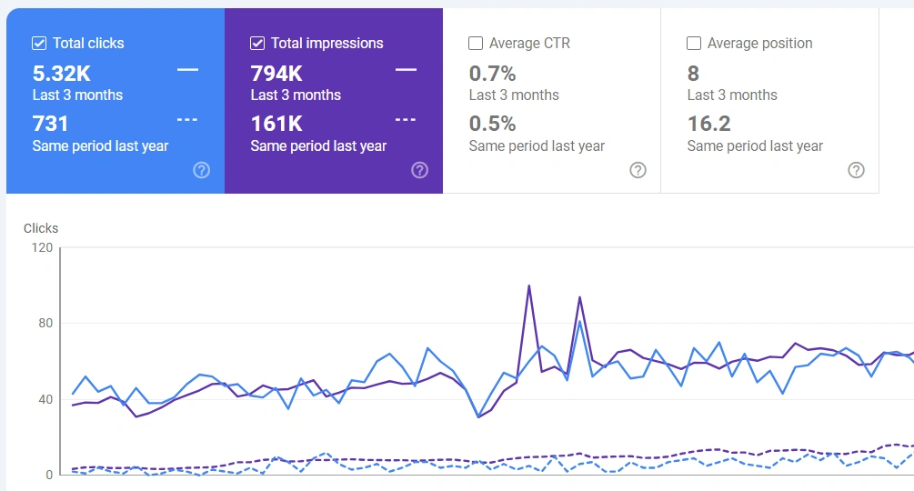

Three months against the same period a year earlier
In the 3-month comparison, clicks grew from 731 to 5.32K and impressions from 161K to 794K. Average position improved from 16.2 to 8, and average CTR rose from 0.5% to 0.7%.

| Metric | Year earlier | 3-month period | Change |
|---|---|---|---|
| Clicks | 731 | 5.32K | +628% |
| Impressions | 161K | 794K | +393% |
| Average CTR | 0.5% | 0.7% | +0.2 points |
| Average position | 16.2 | 8 | 8.2 positions higher |
Percentage changes are calculated from the rounded figures shown in Search Console.